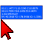

Info dal mouse |
| Descrizione |
|---|
| Fornisce in tempo reale informazioni sulle coordinate, lunghezza e angoli del mouse. |
| Autore |
| Mario52 |
| Link |
| Esempi di macro Come installare le Macro Personalizzare la barra degli strumenti |
| Versione |
| 00.04 |
| Data ultima modifica |
| 2018-03-27 |
Fornisce in tempo reale informazioni sulle coordinate, lunghezza e angoli del mouse in una bolla di annotazione visualizzata nella schermata 3D
Dopo aver installato la macro nella cartella delle macro, eseguirla. Viene creata l'annotazione che visualizza in tempo reale le informazioni sulla posizione del mouse.
Dopo il primo click, sono visualizzate la altre informazioni (Nella modalità "Forced" vengono visualizzati questi dati)
se il mouse si trova sopra un oggetto, il nome dell'oggetto appare nella parte superiore dell'annotazione
Utilizzare i tasti:
SHIFT + Q : per uscire da FCInfoToMouse, se si esce dalla macro l'annotazione rimane nella posizione corrente del mouse. Se si desidera eliminare l'annotazione si deve farlo manualmente. Selezionare l'annotazione nella vista ad albero e eliminarla o nasconderla.
SHIFT + M : per forzare la visualizzazione completa nei modi "single", o "normal".
SHIFT + C : per mostrare o nascondere l'annotazione.
SHIFT + D : for "open / close" a spreadSheet in document the coordinate saved to:
cell A : x, y, z cell B : x cell C : y cell D : z
In qualsiasi momento, è possibile modificare le proprietà della annotazione impostando i parametri nella scheda Vista che si apre facendo clic sull'oggetto FCInfoToMouse nella Vista Combinata.
Se si desidera cambiare il numero di decimali,modificare la riga 43 del codice (default 4 decimali)
Esempio per 6 cifre decimali:
valore originale
global arrondi ; arrondi = 4
sostituire con
global arrondi ; arrondi = 6
Per rendere la configurazione dell'annotazione permanente è possibile modificare i valori di configurazione nelle linee della sezione da 104 a 122
L'icona FCInfoToMouse.png  per personalizzare la barra degli strumenti
Macro_FCInfoToMouse.FCMacro
# -*- coding: utf-8 -*-
"""
***************************************************************************
* Copyright (c) 2016 <mario52> *
* *
* This file is a supplement to the FreeCAD CAx development system. *
* *
* This program is free software; you can redistribute it and/or modify *
* it under the terms of the GNU Lesser General Public License (LGPL) *
* as published by the Free Software Foundation; either version 2 of *
* the License, or (at your option) any later version. *
* for detail see the LICENCE text file. *
* *
* This software is distributed in the hope that it will be useful, *
* but WITHOUT ANY WARRANTY; without even the implied warranty of *
* MERCHANTABILITY or FITNESS FOR A PARTICULAR PURPOSE. See the *
* GNU Library General Public License for more details. *
* *
* You should have received a copy of the GNU Library General Public *
* License along with this macro; if not, write to the Free Software *
* Foundation, Inc., 59 Temple Place, Suite 330, Boston, MA 02111-1307 *
* USA *
***************************************************************************
* WARNING! All changes in this file will be lost and *
* may cause malfunction of the program *
***************************************************************************
"""
# http://forum.freecadweb.org/viewtopic.php?f=22&t=9215
# FCInfoToMouse
__title__ = "FCInfoToMouse"
__author__ = "Mario52"
__url__ = "https://www.freecadweb.org/wiki/Macro_FCInfoToMouse"
__version__ = "00.04"
__date__ = "27/03/2018"
#
import Draft, Part
import math,FreeCAD
from FreeCAD import Base
import time
App = FreeCAD
global arrondi ; arrondi = 4
global objectAnn ; objectAnn = ""
global positionX1 ; positionX1 = 0.0
global positionY1 ; positionY1 = 0.0
global positionZ1 ; positionZ1 = 0.0
global force ; force = 0
global hidden ; hidden = 0
global coorBegin ; coorBegin = ""
global pas ; pas = 0
global spreadSheet; spreadSheet= 0
global compteur ; compteur = 0
global spread ; spread = ""
from math import sqrt, pi, sin, cos, asin, acos, atan, atan2, degrees
def angle2(vecteur_x1,vecteur_y1,vecteur_x2,vecteur_y2,mode): #tester getAngle ( Vector )
# calcul de l'inclinaison d'une ligne a partir de deux Vecteurs
# si "mode" = 1 alors affichage en degres sinon en radian
try:
deltaX = vecteur_x2 - vecteur_x1
deltaY = vecteur_y2 - vecteur_y1
if mode ==1:
angle = degrees(atan2(float(deltaY),float(deltaX))) # degres (mode = 1)
else:
angle = atan2(float(deltaY),float(deltaX)) # radian (mode = 0)
return round(angle,arrondi)
except Exception:
None
def sub(first, other):
"sub(Vector,Vector) - subtracts second vector from first one"
if isinstance(first,FreeCAD.Vector) and isinstance(other,FreeCAD.Vector):
return FreeCAD.Vector(first.x-other.x, first.y-other.y, first.z-other.z)
def length(first):
"lengh(Vector) - gives vector length"
if isinstance(first,FreeCAD.Vector):
return math.sqrt(first.x*first.x + first.y*first.y + first.z*first.z)
def dist(first, other):
"dist(Vector,Vector) - returns the distance between both points/vectors"
if isinstance(first,FreeCAD.Vector) and isinstance(other,FreeCAD.Vector):
return length(sub(first,other))
def codeColor(color):
try:
rgb = float((float(color)/255.0))
except Exception:
rgb = 0.0
return rgb
doc = FreeCAD.ActiveDocument
if doc == None:
doc = FreeCAD.newDocument()
# for modify the configuration : line 104 to 122
# PS: if DisplayMode = "Line" and Frame = False the annotation is transparent
#
##### Configuration Modify here # Begin #######################################
#
#BackgroundColor : #
red_B = 0.0 # 0.0 to 255.0 #
green_B = 84.0 # 0.0 to 255.0 #
blue_B = 255.0 # 0.0 to 255.0 #
#
displayMode = "Line" # "Line" or "Object" #
fontName = "MS Shell Dlg 2" # "MS Shell Dlg 2" for Windows #
fontSize = 8.0 # Font size #
frame = False # "False" or "True" #
justification = "Left" # "Left", "Right", "Center" #
#
#TextColor : #
red_T = 255.0 # 0.0 to 255.0 #
green_T = 255.0 # 0.0 to 255.0 #
blue_T = 255.0 # 0.0 to 255.0 #
#
##### Configuration End End ###################################################
v=Gui.activeDocument().activeView()
objectAnn = App.ActiveDocument.addObject("App::AnnotationLabel","FCInfoToMouse")# create work annotation
objectAnn.LabelText=["Hello FreeCAD World"]
FreeCADGui.getDocument(doc.Name).getObject(objectAnn.Label).BackgroundColor = (codeColor(red_B),codeColor(green_B),codeColor(blue_B)) #
FreeCADGui.getDocument(doc.Name).getObject(objectAnn.Label).DisplayMode = displayMode #
FreeCADGui.getDocument(doc.Name).getObject(objectAnn.Label).FontName = fontName #
FreeCADGui.getDocument(doc.Name).getObject(objectAnn.Label).FontSize = fontSize #
FreeCADGui.getDocument(doc.Name).getObject(objectAnn.Label).Frame = frame #
FreeCADGui.getDocument(doc.Name).getObject(objectAnn.Label).Justification = justification #
FreeCADGui.getDocument(doc.Name).getObject(objectAnn.Label).TextColor = (codeColor(red_T),codeColor(green_T),codeColor(blue_T)) #
import os, sys, platform
global PolicePath; PolicePath = ""
#if platform.system() == "Windows" :
# PolicePath = "C:/Windows/Fonts/ARIAL.TTF"
#elif platform.system() == "Linux" :
# PolicePath = "/usr/share/fonts/truetype/ubuntu-font-family/Ubuntu-M.ttf"
#elif platform.system() == "Darwin":
# PolicePath = "/Library/Fonts/Arial.ttf"
#else:
# PolicePath = "C:/Windows/Fonts/ARIAL.TTF"
p=FreeCAD.ParamGet("User parameter:BaseApp/Preferences/Mod/Draft")
PolicePath = p.GetString("FontFile")
class ViewObserver:
def __init__(self, view):
self.view = view
def logPosition(self, info):
global objectAnn
global positionX1, positionY1, positionZ1
global pas, arrondi
global coorBegin
global force
global hidden
global PolicePath
global spreadSheet
global compteur
global spread
######## for testing key ############
# try: #
# print info["Key"] #
# print info["State"] #
## print ord(info["Key"]) #
# except Exception: #
# None #
#####################################
Button1 = 0
try:
if (info["Key"] == "Q") and (info["State"] == "DOWN"): # SHIFT + Q for quit
v.removeEventCallback("SoEvent",c) # close event observation
FreeCAD.Console.PrintMessage( "End FCInfoToMouse" + "\n")
except Exception:
None
try:
if (info["Key"] == "M") and (info["State"] == "DOWN"): # SHIFT + M for force display
if force == 0:
force = 1
FreeCAD.Console.PrintMessage( "Forced " + "\n")
elif force == 1:
force = 2
FreeCAD.Console.PrintMessage( "Single " + "\n")
elif force == 2:
force = 0
FreeCAD.Console.PrintMessage( "Normal " + "\n")
except Exception:
None
try:
if (info["Key"] == "C") and (info["State"] == "DOWN"): # SHIFT + C for hidden / visible annotation OK
if hidden == 0:
hidden = 1
FreeCADGui.getDocument(doc.Name).getObject(objectAnn.Label).Visibility = False
FreeCAD.Console.PrintMessage( "concealed " + "\n")
else:
hidden = 0
FreeCADGui.getDocument(doc.Name).getObject(objectAnn.Label).Visibility = True
FreeCAD.Console.PrintMessage( "visible " + "\n")
except Exception:
None
try:
if (info["Key"] == "D") and (info["State"] == "DOWN"): # SHIFT + S for Open spreadSheet
if spreadSheet == 0:
#spread = FreeCAD.ActiveDocument.getObjectsByLabel(spread.Name)[0] # for append in existant SpreadSheet
spread = App.activeDocument().addObject('Spreadsheet::Sheet','MySpreedSheett')
spreadSheet = 1
FreeCAD.Console.PrintMessage("SpreadSheet open : " + spread.Name + "\n")
else:
spreadSheet = 0
FreeCAD.Console.PrintMessage("SpreadSheet closed" + "\n")
compteur = 0
except Exception:
None
try:
object2 = ""
object = v.getObjectInfo(v.getCursorPos()) # here for object preselected
object2 = object["Object"] + "." + object["Component"] # object + component
pnt = FreeCAD.Vector(float(object["x"]),float(object["y"]),float(object["z"]))# vector on position mouse to object
# print "pnt ",pnt
except Exception:
pos = info["Position"] # if mouse in 3D view
pnt = self.view.getPoint(pos) # vector detect on mouse position 3D view
# print "pnt ",pnt
try:
if (info["Button"] == "BUTTON1") and (info["State"] == "DOWN"): # coordinates clic to mouse
positionX1 = round(pnt[0],arrondi)
positionY1 = round(pnt[1],arrondi)
positionZ1 = round(pnt[2],arrondi)
coorBegin = ""
coorBegin = "X1: "+str(positionX1)+" Y1: "+str(positionY1)+" Z1: "+str(positionZ1)
if pas == 0:
pas = 1
else:
pas = 0
try: # spreadSheet
if spreadSheet == 1:
compteur += 1
spread.set("A"+str(compteur) , str(positionX1) + ", " + str(positionY1) + ", " + str(positionZ1))
spread.set("B"+str(compteur) , str(positionX1))
spread.set("C"+str(compteur) , str(positionY1))
spread.set("D"+str(compteur) , str(positionZ1))
App.ActiveDocument.recompute()
FreeCAD.Console.PrintMessage(str(compteur) + " : " + str(positionX1) + ", " + str(positionY1) + ", " + str(positionZ1) + "\n")
except Exception:
None
except Exception:
None
try:
objectAnn.BasePosition = (pnt[0], pnt[1], pnt[2])
if force == 2:
objectAnn.LabelText = ["X: " + str(round(pnt[0],arrondi)) + " Y: " + str(round(pnt[1],arrondi)) + " Z: " + str(round(pnt[2],arrondi))]
else:
if ((pas == 1) or (force == 1)):
coorEnd = longueur = angles = ""
coorEnd = "X2: " + str(round(pnt[0],arrondi)) + " Y2: " + str(round(pnt[1],arrondi)) + " Z2: " + str(round(pnt[2],arrondi))
longueur = "L: " + str(round(dist(FreeCAD.Vector(positionX1,positionY1,positionZ1), FreeCAD.Vector(pnt[0], pnt[1], pnt[2])),12)) # around to 12 decimales
alphaXY = alphaXY = alphaXZ = 0.0
alphaXY = str(round(angle2(positionX1,positionY1,pnt[0],pnt[1],1),arrondi))
alphaYZ = str(round(angle2(positionY1,positionZ1,pnt[1],pnt[2],1),arrondi))
alphaXZ = str(round(angle2(positionX1,positionZ1,pnt[0],pnt[2],1),arrondi))
angles = "XY: " + alphaXY + unichr(176) + " YZ: " + alphaYZ + unichr(176) + " XZ: " + alphaXZ + unichr(176) # unichr(176) = degrees character
if object2 == "":
objectAnn.LabelText = [coorBegin, coorEnd, longueur, angles,]
else:
objectAnn.LabelText = [object2, coorBegin, coorEnd, longueur, angles,]
else:
if object2 == "":
objectAnn.LabelText = ["X: " + str(round(pnt[0],arrondi)) + " Y: " + str(round(pnt[1],arrondi)) + " Z: " + str(round(pnt[2],arrondi)),]
else:
objectAnn.LabelText = [object2, "X: " + str(round(pnt[0],arrondi)) + " Y: " + str(round(pnt[1],arrondi)) + " Z: " + str(round(pnt[2],arrondi))]
except Exception:
FreeCAD.Console.PrintError("End FCInfoToMouse by an error" + "\n")
v.removeEventCallback("SoEvent",c) # close event observation
##### Begin ######
FreeCAD.Console.PrintMessage("__Welcome to FCInfoToMouse__" + "\n")
FreeCAD.Console.PrintMessage("SHIFT + Q : for quit" + "\n")
FreeCAD.Console.PrintMessage("SHIFT + M : for force display, mode single, mode normal" + "\n")
FreeCAD.Console.PrintMessage("SHIFT + C : for concealed / visible" + "\n")
FreeCAD.Console.PrintMessage("SHIFT + D : for create spreadSheet / close spreadSheet" + "\n")
FreeCAD.Console.PrintMessage("____________________________" + "\n")
pas = 0
o = ViewObserver(v)
try:
c = v.addEventCallback("SoEvent",o.logPosition)
except Exception:
App.ActiveDocument.removeObject(objectAnn.Label)
FreeCAD.Console.PrintMessage( "Not GUI End FCInfoToMouse" + "\n")
or to Gists Macro_FCInfoToMouse.FCMacro or the zip Macro_FCInfoToMouse.FCMacro.zip
È possibile che la macro non riconosca alcuni tasti
La discussione nel forum From autocad to freecad
Le mie macro in mario52a gists
27/03/2018 ver 00.04 : add function "Save the coordinate in a spreadSheet key "D" flip/flop on,off
24/01/2016 ver 00.03 : add section configuration and replace key "C" to "M"
23/01/2016 ver 00.02 : add function "single", replace key "H" to "C" and correct bug
02/01/2016 : ver 0.1
{kind=link}
{kind=link}
{kind=link}
{kind=link}
{kind=link}